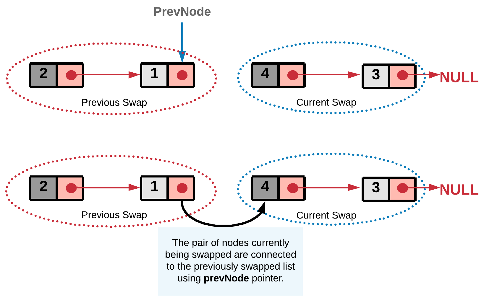
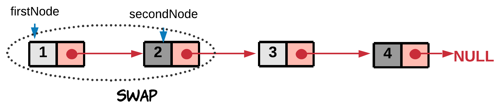
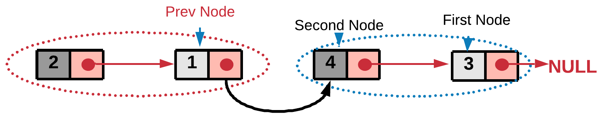

24. Swap Nodes in Pairs
Approach 2: Iterative Approach
Intuition
The concept here is similar to the recursive approach. We break the linked list into pairs by jumping in steps of two. The only difference is, unlike recursion, we swap the nodes on the go. After swapping a pair of nodes, say A and B, we need to link the node B to the node that was right before A. To establish this linkage we save the previous node of node A in prevNode.

Algorithm
- We iterate the linked list with jumps in steps of two.
- Swap the pair of nodes as we go, before we jump to the next pair. Let's represent the two nodes to be swapped by
firstNodeandsecondNode.
 - Swap the two nodes. The swap step is
firstNode.next = secondNode.next secondNode.next = firstNode
- We also need to assign the
prevNode's next to the head of the swapped pair. This step would ensure the currently swapped pair is linked correctly to the end of the previously swapped list.
prevNode.next = secondNode
This is an iterative step, so the nodes are swapped on the go and attached to the previously swapped list. And in the end we get the final swapped list.
Implementation
/**
* Definition for singly-linked list.
* public class ListNode {
* int val;
* ListNode next;
* ListNode(int x) { val = x; }
* }
*/
class Solution {
public ListNode swapPairs(ListNode head) {
// Dummy node acts as the prevNode for the head node
// of the list and hence stores pointer to the head node.
ListNode dummy = new ListNode(-1);
dummy.next = head;
ListNode prevNode = dummy;
while ((head != null) && (head.next != null)) {
// Nodes to be swapped
ListNode firstNode = head;
ListNode secondNode = head.next;
// Swapping
prevNode.next = secondNode;
firstNode.next = secondNode.next;
secondNode.next = firstNode;
// Reinitializing the head and prevNode for next swap
prevNode = firstNode;
head = firstNode.next; // jump
}
// Return the new head node.
return dummy.next;
}
}
Java
/**
* Definition for singly-linked list.
* public class ListNode {
* int val;
* ListNode next;
* ListNode(int x) { val = x; }
* }
*/
class Solution {
public ListNode swapPairs(ListNode head) {
// Dummy node acts as the prevNode for the head node
// of the list and hence stores pointer to the head node.
ListNode dummy = new ListNode(-1);
dummy.next = head;
ListNode prevNode = dummy;
while ((head != null) && (head.next != null)) {
// Nodes to be swapped
ListNode firstNode = head;
ListNode secondNode = head.next;
// Swapping
prevNode.next = secondNode;
firstNode.next = secondNode.next;
secondNode.next = firstNode;
// Reinitializing the head and prevNode for next swap
prevNode = firstNode;
head = firstNode.next; // jump
}
// Return the new head node.
return dummy.next;
}
}
Python
# Definition for singly-linked list.
# class ListNode:
# def __init__(self, x):
# self.val = x
# self.next = None
class Solution:
def swapPairs(self, head: ListNode) -> ListNode:
"""
:type head: ListNode
:rtype: ListNode
"""
# Dummy node acts as the prevNode for the head node
# of the list and hence stores pointer to the head node.
dummy = ListNode(-1)
dummy.next = head
prev_node = dummy
while head and head.next:
# Nodes to be swapped
first_node = head;
second_node = head.next;
# Swapping
prev_node.next = second_node
first_node.next = second_node.next
second_node.next = first_node
# Reinitializing the head and prev_node for next swap
prev_node = first_node
head = first_node.next
# Return the new head node.
return dummy.next
Complexity Analysis
- Time Complexity: , where is the size of the linked list.
- Space Complexity: